08/02/2026 — Bệnh nhân này sẽ nhận được cách chăm sóc của quá khứ hay của tương lai? (NSTEMI là một chẩn đoán vô giá trị)
Bản dịch tiếng Việt của bài "Will this patient get care of the past or care of the future? (NSTEMI is a worthless diagnosis)" – Dr. Smith’s ECG Blog. Giữ nguyên toàn bộ 14 hình ảnh của bản gốc.

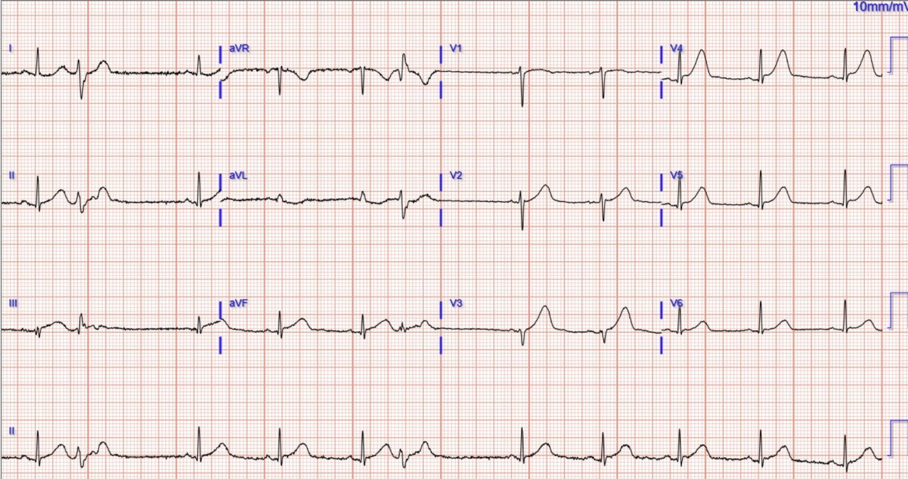
Gửi bởi một người giấu tên
Một phụ nữ ngoài 40 tuổi đến viện vì đau ngực cấp. Các dấu hiệu sinh tồn trong giới hạn bình thường. Đây là điện tâm đồ lúc phân loại (triage) của bệnh nhân:

Độc giả của blog sẽ không cần bất kỳ điện tâm đồ nền nào để so sánh. Nhưng đây là bản đó, dành cho ai cần:

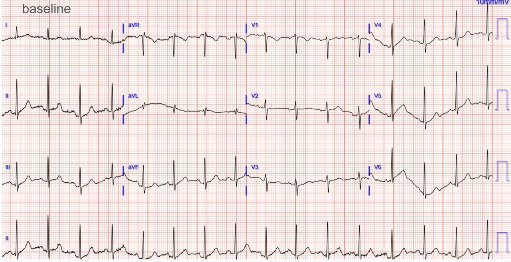
Bạn nghĩ sao? Bệnh nhân này có thực sự được chăm sóc kịp thời tại cơ sở của bạn không?
Đây là điều sẽ xảy ra nếu bạn biết đọc điện tâm đồ, hoặc dùng Queen of Hearts:

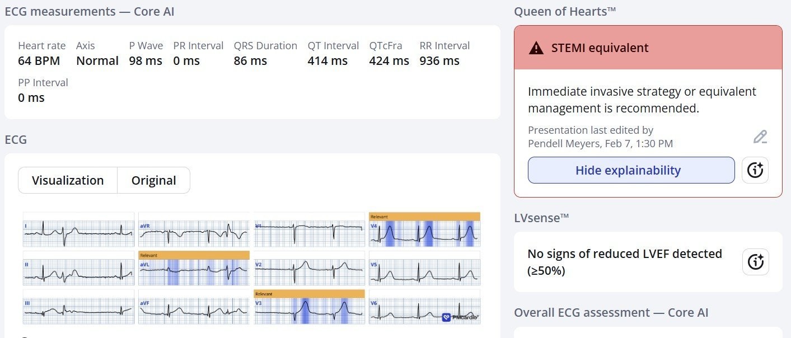
Điện tâm đồ lúc nhập viện cho thấy các dấu hiệu rõ ràng và có giá trị chẩn đoán của nhồi máu cơ tim do tắc LAD cấp. Có sóng T tối cấp (HATW) ở V2-V5, và một ít ST chênh lên (STE) (dưới tiêu chuẩn STEMI) ở V3, V4, II, III, aVF.
Nhiều người chưa được đào tạo sẽ nói rằng không có ST chênh xuống soi gương (reciprocal) trên 12 chuyển đạo chuẩn (điều này đúng ở một nửa số ca tắc LAD!), nhưng họ sai trong ca này: có ST chênh xuống (STD) soi gương ở aVL đối với chuyển đạo III.
Nếu bạn đang thắc mắc các dấu hiệu soi gương của thành trước nằm ở đâu, thì điều đó khá dễ hình dung, trừ khi bạn đã bị "tẩy não" bởi quy ước gọi tên các thành cơ tim của ACC/AHA. Đối diện với các chuyển đạo trước sẽ là đâu? Chúng sẽ nằm ở phía đối diện trực tiếp, tức các chuyển đạo phía sau. Lý do duy nhất khiến phần lớn STEMI/OMI thành trước “không có dấu hiệu soi gương” trên 12 chuyển đạo chuẩn là vì không ai ghi chuyển đạo phía sau để thấy các dấu hiệu soi gương đó.
Đây là thang điểm HATW khách quan, đã được công bố của chúng tôi áp dụng cho điện tâm đồ này (màu đỏ nghĩa là sóng T đạt tiêu chuẩn HATW):

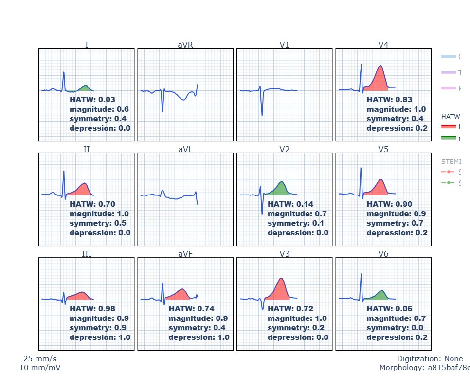
Một số người có thể nghĩ rằng Queen chỉ việc báo dương tính với mọi thứ. Họ sai. Theo kinh nghiệm của tôi, Queen có độ đặc hiệu cao hơn khoảng 100% số người nghĩ như vậy. Đây là kết luận của Queen đối với điện tâm đồ nền (khi bệnh nhân không có ACS):

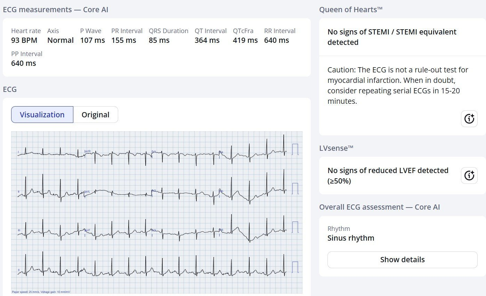
Đây là kết quả công thức của chúng tôi trên điện tâm đồ nền bình thường, không có HATW (màu xanh lá nghĩa là sóng T trong giới hạn bình thường):

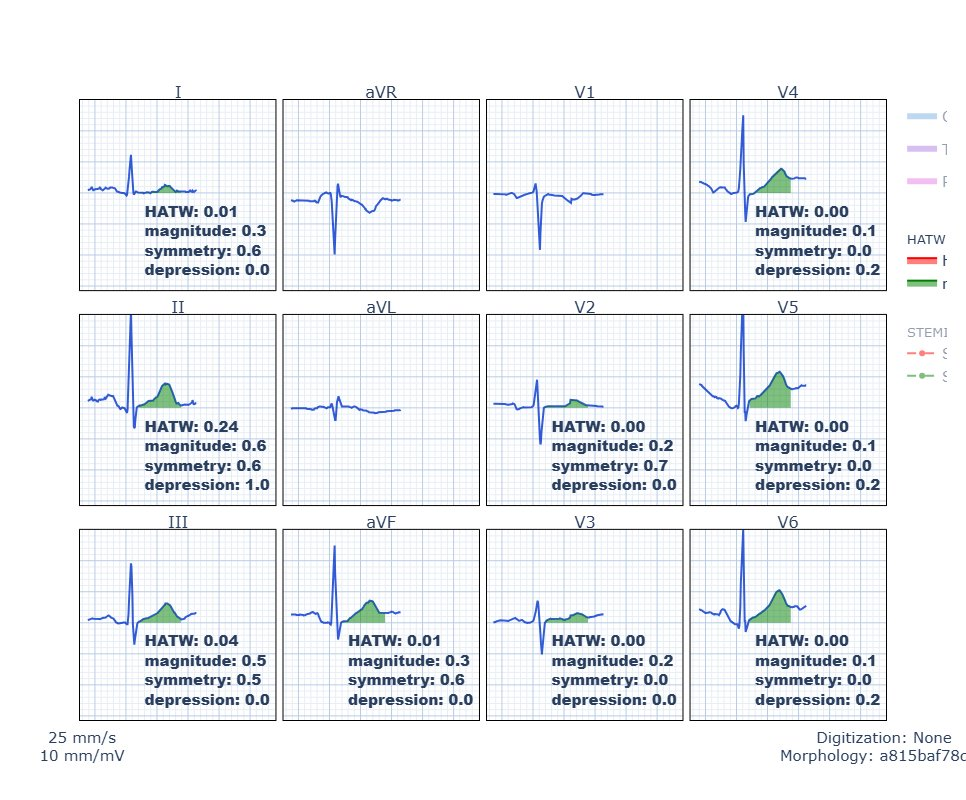
Bài báo trong đó chúng tôi xây dựng và thẩm định công thức cho sóng T tối cấp
Vậy điều gì đã thực sự xảy ra với bệnh nhân này?
Điện tâm đồ lúc phân loại của bệnh nhân được đọc là “Không phải STEMI.” Và bệnh nhân được đưa ra phòng chờ sau khi đã lấy máu xét nghiệm.
Tất cả những ai không được đào tạo tốt về điện tâm đồ đều ngạc nhiên khi troponin I của bệnh nhân trả về 181 ng/L.
Vậy đây là nhồi máu cơ tim, nhưng chỉ là NSTEMI.
Chỉ đến lúc đó mới có chỉ định ghi lại điện tâm đồ (khoảng 2 giờ sau khi đến viện), dù bệnh nhân vẫn đau liên tục suốt thời gian đó:

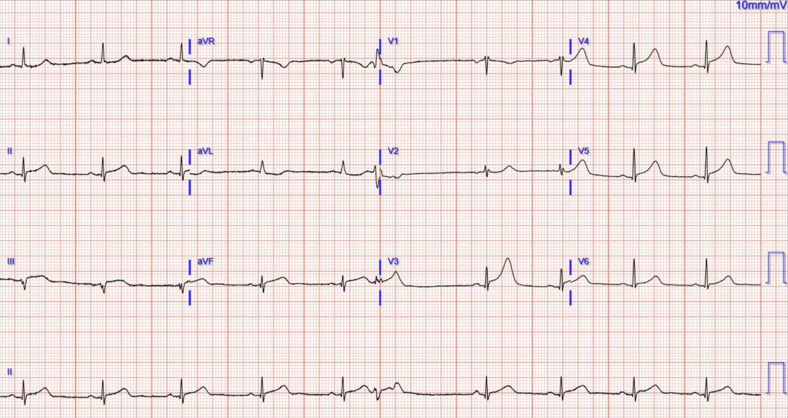

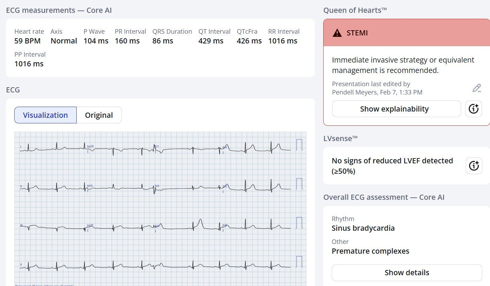
Lúc này điện tâm đồ thực sự vừa đủ đạt tiêu chuẩn STEMI ở chỉ vài chuyển đạo. Vì vậy Queen gọi đó là “STEMI” thay vì “tương đương STEMI”, nhưng bản này cũng dễ y như bản đầu tiên.
Tuy vậy, bác sĩ được đào tạo theo cách thông thường đã không thấy bất kỳ “dấu hiệu STEMI rõ ràng” nào. Họ hội chẩn tim mạch, và bác sĩ tim mạch đồng ý rằng đây “không phải STEMI thực sự.” Họ khuyên kiểm tra lại troponin.
Smith: NSTEMI kèm triệu chứng dai dẳng phải được đưa cấp cứu vào phòng thông tim (cath lab) ngay khi phát hiện ra điều đó. Vì vậy, ngay cả khi bạn không nhận ra tắc cấp trên điện tâm đồ, tiêu chuẩn chăm sóc vẫn là đưa vào phòng thông tim. (Dĩ nhiên tiêu chuẩn này CŨNG dẫn đến chăm sóc bị chậm trễ không thể chấp nhận được — trong ca này là chậm 2 giờ, và chậm 2 giờ làm mất phần lớn lợi ích của tái tưới máu.) Dù sao đi nữa, nghiên cứu duy nhất về vấn đề này cho thấy các hướng dẫn về “NSTEMI” này chỉ được tuân thủ trong 6% trường hợp!
Lupu L, Taha L, Banai A, và cs. Immediate and early percutaneous coronary intervention in very high-risk and high-risk non-ST segment elevation myocardial infarction patients. Clin Cardiol [Internet] 2022; Có tại: https://onlinelibrary.wiley.com/doi/10.1002/clc.23781
Troponin lần sau là 368 ng/L.
Một điện tâm đồ ghi lại được chỉ định để kiểm tra STEMI (vào khoảng giờ thứ 4):

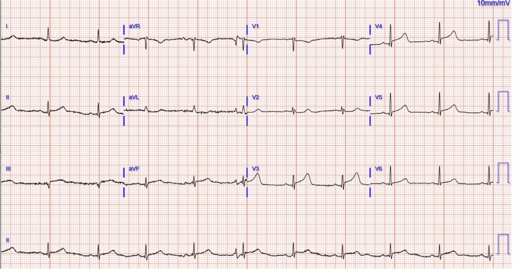

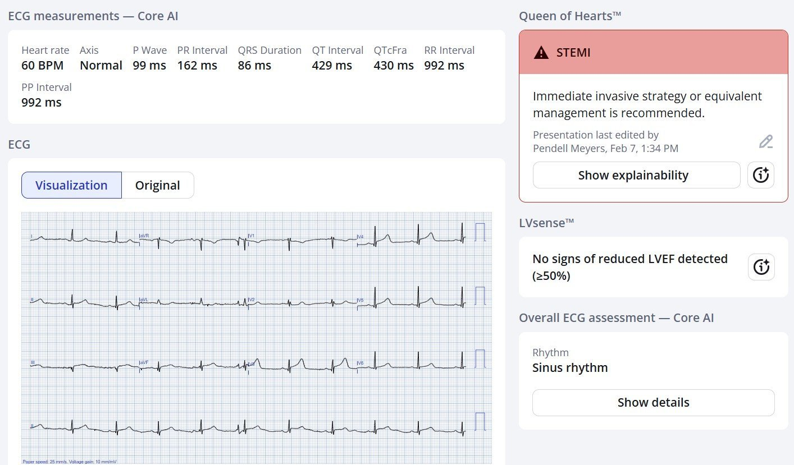
Vẫn được đánh giá là “không phải STEMI”.
Bệnh nhân được nhập viện với chẩn đoán “NSTEMI” và được cho thuốc giảm đau. Bác sĩ tiếp nhận nội trú hội chẩn lại tim mạch khi troponin các lần sau >25.000 ng/L.
Khoảng 8 giờ sau khi đến viện, bệnh nhân được chụp mạch vành:

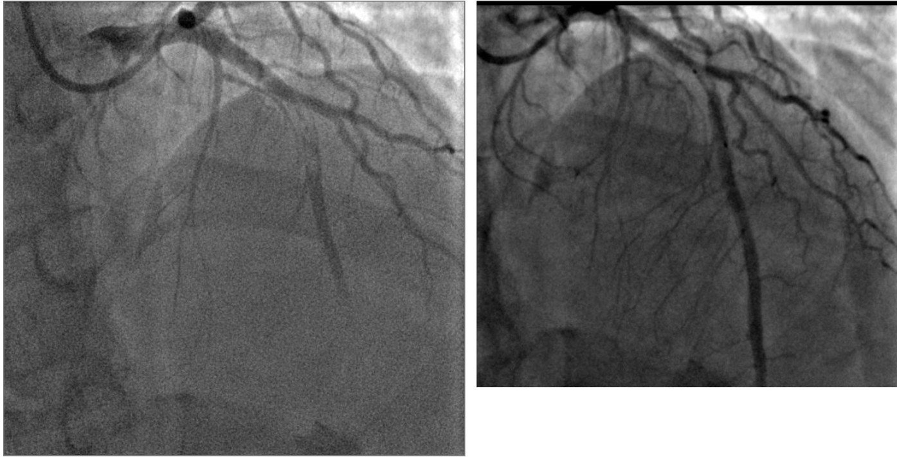
Tổn thương thủ phạm được mô tả là tắc hoàn toàn do huyết khối ở đoạn giữa LAD, và bệnh nhân được can thiệp mạch vành qua da (PCI).
Đây là điện tâm đồ của bệnh nhân vài giờ sau PCI:

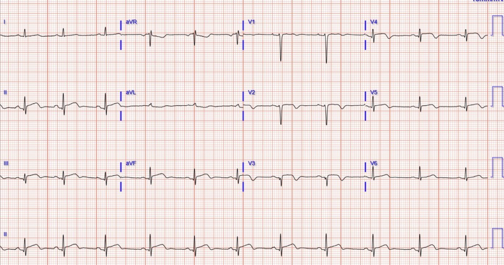

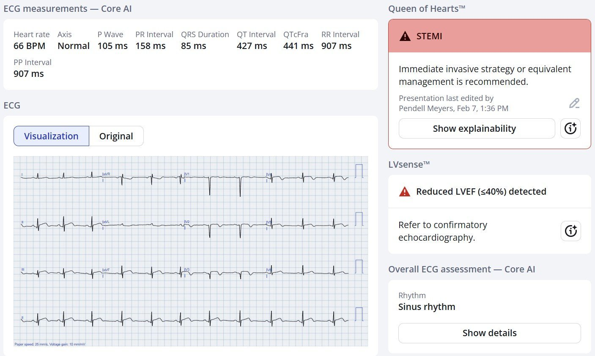
Queen được huấn luyện để rất thận trọng, vì vậy mặc dù các mô hình AI của chúng tôi có thể thấy có hình ảnh tái tưới máu (sóng T đảo ngược từ phần cuối cho đến toàn bộ) đang xuất hiện ở nhiều chuyển đạo, Queen vẫn báo “STEMI” vì Queen không biết đã có PCI, và vẫn còn ST chênh lên kéo dài cùng các dấu hiệu thiếu máu cục bộ đang tiếp diễn (có lẽ do chậm trễ chăm sóc quá tệ, dẫn tới can thiệp ít mang lại lợi ích hơn).
Bạn cũng có thể thấy mô hình phát hiện LVEF của Queen đã phát hiện EF giảm (điều không hề có lúc khởi đầu OMI khi bệnh nhân đến viện!).
Điều này được xác nhận bằng siêu âm tim chính thức với EF 37%, kèm rối loạn vận động thành (WMA) vùng trước, vách và mỏm.
Bệnh nhân sống sót qua đợt nằm viện, nhưng từ vô số dữ liệu (xem Khan, Wang, v.v.) chúng ta biết rằng bệnh nhân có tiên lượng dài hạn xấu so với các ca nhồi máu cơ tim cấp (AMI) không tắc mạch vành (NOMI). Tôi nghĩ tiên lượng sẽ tốt hơn nếu được tái tưới máu ngay lập tức thay vì chậm trễ 8 giờ.
Chẩn đoán ra viện: “Nhồi máu cơ tim cấp không ST chênh lên (NSTEMI) thành trước”
Bệnh nhân đã nhận được cách chăm sóc ACS của quá khứ (và đáng buồn là của cả hiện tại ở nhiều nơi). Chúng tôi đang làm việc nhanh nhất có thể để thay đổi điều này.
Smith: “NSTEMI” là một chẩn đoán vô giá trị. 30-40% NSTEMI là nhồi máu cơ tim do tắc (Occlusion MI), và các ca này có tiên lượng xấu hơn nhiều so với NSTEMI có động mạch còn thông, mặc dù trẻ hơn và khỏe mạnh hơn lúc ban đầu. ĐỪNG BAO GIỜ chẩn đoán ai đó là NSTEMI. Đó là một chẩn đoán vô giá trị. Nó hoàn toàn không mang bất kỳ ý nghĩa sinh lý hay giải phẫu nào.
Ứng dụng PMcardio for Individuals App 3.0 mới nay đã có mô hình Queen of Hearts mới nhất và khả năng giải thích của AI (bản đồ nhiệt màu xanh dương)! Tải ngay cho iOS hoặc Android. https://www.powerfulmedical.com/pmcardio-individuals/ (Dr. Smith và Dr. Meyers đã huấn luyện mô hình AI và là cổ đông của Powerful Medical). Là thành viên cộng đồng của chúng tôi, bạn có thể dùng mã DRSMITH20 để được giảm 20% độc quyền cho năm đầu tiên của gói đăng ký theo năm. Tuyên bố miễn trừ: Một số Mô-đun AI ECG là thiết bị y tế mang dấu CE theo EU MDR và chỉ được chứng nhận lưu hành tại Liên minh châu Âu và Vương quốc Anh. Công nghệ PMcardio chưa được Cục Quản lý Thực phẩm và Dược phẩm Hoa Kỳ (FDA) cấp phép sử dụng lâm sàng tại Hoa Kỳ.
= = =
======================================
BÌNH LUẬN CỦA TÔI, bởi KEN GRAUER, MD (8/2/2026):
Tôi thấy bài hôm nay của Dr. Meyers thật khó đọc. Chẩn đoán trong ca hôm nay lẽ ra không được bỏ sót (với hậu quả là chậm trễ 8 giờ mới thông tim và PCI).
- “Thời gian là cơ (cơ tim)”. Như đã nhấn mạnh trong bài ngày 23 tháng Mười năm 2025 (và trong biểu đồ mà Dr. Smith bổ sung vào bài ngày 15 tháng Một năm 2026) — Lợi ích lớn nhất từ tái tưới máu đạt được trong vòng 4 giờ đầu sau khi tắc động mạch vành cấp (Cứ mỗi 2 giờ chậm trễ thì thêm 60% cơ tim bị nhồi máu).
= = =
Trong bài hôm nay — Dr. Meyers minh họa đầy đủ chi tiết những ưu điểm không thể chối cãi của ứng dụng QOH (Queen-Of-Hearts) App 3.0 mới nhất có khả năng giải thích của AI. Hy vọng rằng, vào một lúc nào đó trong tương lai rất gần — những bác sĩ lâm sàng chưa được đào tạo đầy đủ (kể cả bác sĩ tim mạch) vẫn chưa biết đến mô hình OMI, ít nhất sẽ bắt đầu tin tưởng và sử dụng ứng dụng QOH.
- SUY NGHĨ CỦA TÔI: Lẽ ra không nên đến mức này. Việc điện tâm đồ ban đầu hôm nay phản ánh quá rõ ràng một OMI cấp lẽ ra phải dễ dàng nhận ra đối với bất kỳ bác sĩ lâm sàng nào khám bệnh nhân CP (đau ngực).
- Chỉ cần xem lại không quá một vài trong số gần 2.000 ca lâm sàng đã được đăng trên Dr. Smith’s ECG Blog kể từ khi ra đời năm 2008 là đủ để hiểu được (và bắt đầu áp dụng) các nguyên tắc cơ bản khiến OMI cấp trong ca hôm nay trở nên quá rõ ràng!
= = =
Làm thế nào để không bỏ sót chẩn đoán hôm nay …
Như tôi đã nêu trong Bình luận của tôi ở cuối trang của bài ngày 26 tháng Một năm 2026 trên Dr. Smith’s ECG Blog — Danh sách 3 yếu tố MẤU CHỐT của tôi giúp đơn giản hóa việc đọc điện tâm đồ OMI cấp dựa vào việc chú ý tới: — i) Bối cảnh lâm sàng; — ii) Hình dạng; — và iii) Tính tương xứng (proportionality). Để xem xét vai trò của các yếu tố MẤU CHỐT của tôi đối với ca hôm nay — Hãy cân nhắc những điều sau.
- Bối cảnh lâm sàng: Bệnh nhân hôm nay là một phụ nữ ngoài 40 tuổi đến khoa cấp cứu (ED) vì CP mới khởi phát. Bệnh cảnh này ngay lập tức đặt bệnh nhân vào nhóm nguy cơ cao hơn bị một biến cố tim cấp.
Giờ hãy xem Hình 1 — trong đó tôi đã sao lại và đánh dấu điện tâm đồ ban đầu của bệnh nhân này.
- Nhịp trong Hình 1 là nhịp xoang với 2 PVC. Các khoảng (PR-QRS-QTc) bình thường. Trục bình thường. Không có lớn buồng tim.
- Hình dạng của các sóng T to ra không tương xứng ở chuyển đạo V3 và V4 (trong các hình chữ nhật MÀU ĐỎ ở Hình 1) ở bệnh nhân CP mới khởi phát này — khẳng định một cách thuyết phục với chúng ta rằng sóng ST-T ở cả hai chuyển đạo này là tối cấp ( = “đồ sộ” hơn nhiều và rộng hơn ở đáy, cũng như “mập” hơn ở đỉnh so với mức dự kiến khi xét kích thước nhỏ của QRS ở các chuyển đạo này — rõ rệt nhất ở chuyển đạo V3).
- Trong Bối cảnh đã biết rằng sóng T ở các chuyển đạo V3,V4 rõ ràng là tối cấp — các chuyển đạo lân cận V2 và V5, dù không bất thường rõ như V3,V4 — vẫn gợi ý sự lan tiếp của quá trình cấp. Việc mất sóng R từ chuyển đạo V2 sang V3 ủng hộ gợi ý này rằng tổn thương ở các chuyển đạo ngực bắt đầu từ chuyển đạo V2.
= = =
Thêm bằng chứng về tính cấp:
- Dù kín đáo hơn so với sóng ST-T ở các chuyển đạo V3,V4 — sóng ST-T ở chuyển đạo III cũng rõ ràng là tối cấp (một lần nữa — nhấn mạnh tầm quan trọng của hình dạng và tính tương xứng). Xét kích thước rất nhỏ của QRS ở nhát #1 trong chuyển đạo III — đoạn ST của sóng T nhát #1 này thẳng đuỗn rõ rệt, với đỉnh sóng T “mập” hơn dự kiến, và đáy sóng T rộng không tương xứng.
- Đáng tiếc là phần sau của sóng ST-T ở nhát #3 trong chuyển đạo III bị “cắt mất” bởi chỗ chuyển chuyển đạo xảy ra giữa nhát #3 và #4. Dù vậy — chúng ta vẫn thoáng thấy đoạn ST thẳng đuỗn và đáy sóng T rộng không tương xứng trước khi chuyển chuyển đạo — và điều này xác nhận nhận định của chúng ta rằng sóng T của nhát #1 ở chuyển đạo III là tối cấp.
- Xác nhận thêm về tính cấp của sóng T ở chuyển đạo III đến từ ST-T chênh xuống soi gương mà chúng ta thấy ở chuyển đạo aVL (mũi tên MÀU XANH DƯƠNG ở chuyển đạo này).
- Cuối cùng — có PVC! (ngoại tâm thu thất). Dù sự hiện diện của PVC không đặc hiệu cho OMI cấp — ngoại vị thất vẫn là thêm một dấu hiệu phù hợp với thiếu máu cục bộ cấp.
= = =
Hình 1: Tôi đã đánh dấu điện tâm đồ ban đầu trong ca hôm nay.

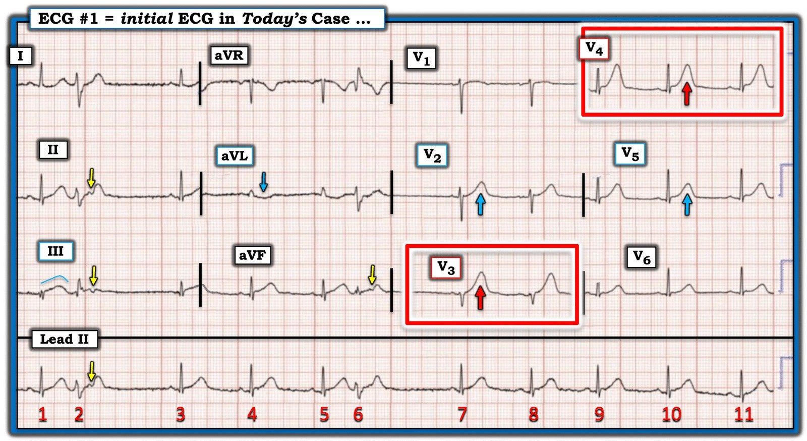
= = =
Tóm lại:
XIN NHẤN MẠNH — Một số dấu hiệu điện tâm đồ tôi nêu ở trên là kín đáo, và có thể không thấy ngay NẾU nhìn riêng lẻ. Nhưng chúng ta cần đánh giá điện tâm đồ ban đầu hôm nay với sự chú ý tập trung vào 3 yếu tố MẤU CHỐT = i) Bối cảnh lâm sàng; — ii) Hình dạng; — và iii) Tính tương xứng.
- Bối cảnh lâm sàng hôm nay là một bệnh nhân CP mới — điều này đặt bệnh nhân vào nhóm nguy cơ cao hơn bị một biến cố tim cấp. Điều đó có nghĩa là ngay cả các dấu hiệu điện tâm đồ kín đáo cũng trở nên quan trọng hơn.
- Ở bệnh nhân CP mới — các nguyên tắc về Hình dạng và Tính tương xứng ngay lập tức xác định sóng ST-T ở chuyển đạo V3,V4 là tối cấp.
- Trong Bối cảnh có ít nhất 2 sóng T tối cấp chắc chắn (ở chuyển đạo V3 và V4) — các bất thường ST-T kém rõ ràng hơn thấy ở ít nhất 5 chuyển đạo khác càng ủng hộ thêm sự hiện diện của một OMI cấp đang diễn tiến cho đến khi chứng minh được điều ngược lại.
Việc cần làm lúc này lẽ ra phải DỄ DÀNG. Ở một bệnh nhân như người phụ nữ trong ca hôm nay, đến khoa cấp cứu vì CP mới với điện tâm đồ ban đầu cho thấy nhiều sóng T tối cấp và tổng cộng ít nhất 7/12 chuyển đạo có dấu hiệu sóng ST-T có thể là cấp — chẩn đoán OMI cấp được xác lập cho đến khi chứng minh được điều ngược lại (và cần thông tim sớm). Nhưng nếu người điều trị còn bất kỳ nghi ngờ nào lúc này về chỉ định thông tim sớm — thì có nhiều việc DỄ DÀNG có thể làm. Bao gồm:
- Hành động dựa trên Troponin dương tính lần 1. Điều này lẽ ra đã bắt buộc phải thông tim sớm trong ca hôm nay.
- Tìm một điện tâm đồ trước đó. Khi xem điện tâm đồ trước đây của bệnh nhân này (mà Dr. Meyers đã đưa ở trên) — không thể còn chút nghi ngờ nào rằng các dấu hiệu điện tâm đồ tôi mô tả ở trên là cấp tính.
- Ghi lại điện tâm đồ trong vòng không quá 10-20 phút! Dù đôi khi cần thời gian để biểu hiện sự tiến triển điện tâm đồ của một biến cố cấp — Dr. Smith’s ECG Blog có vô số không đếm xuể ví dụ về tiến triển sóng ST-T rõ rệt xảy ra trong vòng vài phút khi ghi lại điện tâm đồ ban đầu. Sự xuất hiện của những thay đổi sóng ST-T “động“ như vậy có giá trị chẩn đoán một biến cố cấp đang tiến triển cần thông tim sớm.
- Làm siêu âm tim tại giường (tức là phát hiện một rối loạn vận động thành khu trú trong bối cảnh CP mới khởi phát có giá trị chẩn đoán một biến cố cấp).
ĐIỀU CỐT LÕI: Đọc về những gì xảy ra trong ca hôm nay thật bực bội. Vẫn còn nhiều việc phải làm để tiếp tục “lan tỏa thông điệp” rằng những sai sót này không nhất thiết phải xảy ra …
= = =
Bạn có để ý không? — Vượt ra ngoài phần cốt lõi …
Dù không thiết yếu cho chẩn đoán và xử trí ca hôm nay — có một số đặc điểm thú vị của các PVC thấy trong Hình 1:
- Phức bộ QRS của nhát #2 và #6 không quá rộng. Dù chúng ta không thấy hình dạng của các PVC này ở các chuyển đạo ngực (vì không có PVC nào sau lần chuyển chuyển đạo thứ 2) — hình dạng QRS của nhát #2 ở các chuyển đạo I,II,III giống dẫn truyền kiểu blốc phân nhánh trái sau (rS ở chuyển đạo I — với qR ở chuyển đạo III) — và sóng S tận rộng ở các chuyển đạo I và aVL (của nhát #2 và 6), cùng với sóng R cao ở chuyển đạo aVR của nhát #6 — gợi ý dẫn truyền kiểu blốc nhánh phải. Các đặc điểm này gợi ý rằng nhát #2 và 6 là nhát phân nhánh (fascicular) xuất phát từ phân nhánh trái trước (với các nhát phân nhánh sớm báo trước những biểu hiện lâm sàng tương tự như PVC).
- Cả hai nhát phân nhánh này đều có sóng P ngược dòng ( = các mũi tên MÀU VÀNG trong Hình 1). Các sóng P ngược dòng này cài đặt lại nút SA, và giải thích các khoảng ngưng ngắn sau nhát #2 và 6. Không có blốc AV. (Khoảng một nửa số nhát thất có dẫn truyền ngược dòng về nhĩ — trong khi ở nửa còn lại, các sóng P xoang đúng lúc tiếp tục “đi xuyên qua” PVC mà không bị gián đoạn).
= = =
= = =
= = =